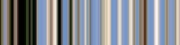

Figure 16.216. Example for the “Smooth Palette” filter

Original image

Filter “Smooth Palette” applied
It creates a striped palette from colors in active layer or selection. The main purpose of this filter is to create color-maps to be used with the Flame filter.
![[Note]](images/note.png)
|
Note |
|---|---|
|
This command only works on RGB images. If the image is Grayscale or Indexed, the menu entry is disabled. |
- Width, Height
-
You can set palette dimensions for Width and Height. Dimensions are linked when the chain is not broken. You can also select the unit.
- Search depth
-
Increasing Search depth (1 - 1024) will result in more shades in the palette.